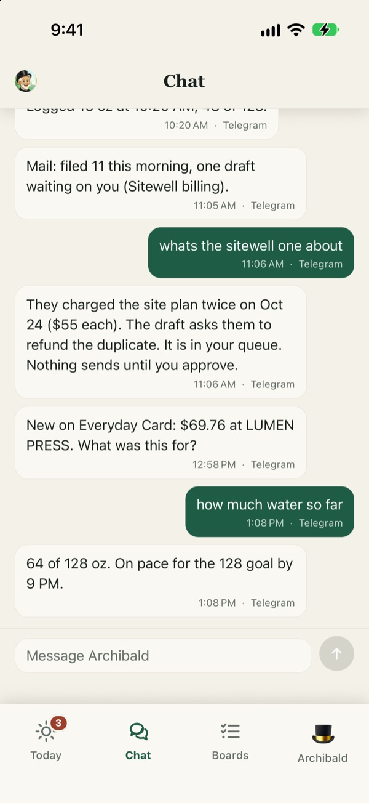
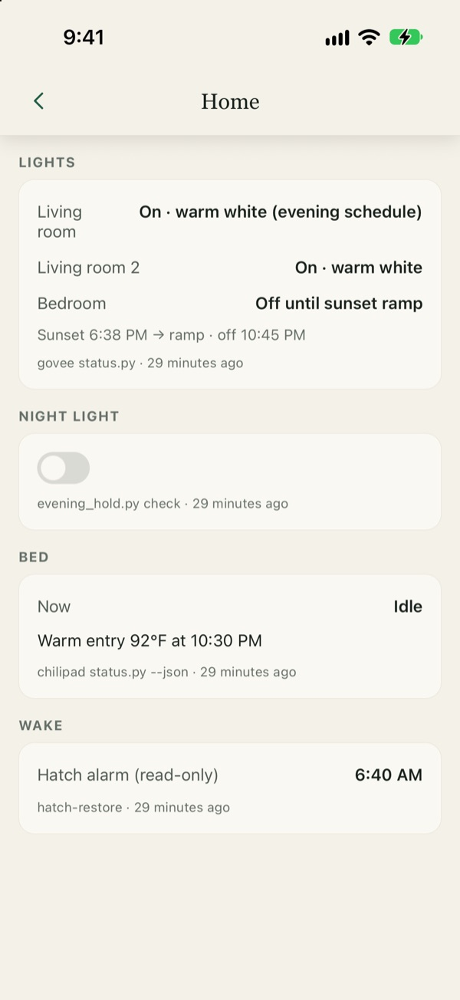

Archibald on a phone
In October 2026 I built an iPhone app for Archibald, the agent that runs my admin from a Mac mini. Every decision it is waiting on, seven dashboards and the same chat, in one place.

Archibald talks to me on Telegram. That is fine for a conversation, but every decision it needed from me arrived as its own message with buttons, and every number I wanted to check meant asking for it. I wanted one screen that shows what is waiting on me, and dashboards I can open without typing a question.
The app runs on my iPhone and talks only to the Mac. It computes nothing itself: every number on it comes from the same reader script the Mac already uses, stamped with when it was read and where it came from. The point was to see Archibald’s work, not to build a second copy of it.
What is on it
- Today. It opens on the needs-you queue: every open decision from every skill, from meal prompts and email drafts to transaction questions and calendar approvals, as one kind of card with the same buttons the Telegram prompt carries. Below that, the day: the schedule with real leave-by times, meal windows, water with quick logs, the putting streak, and the car, home and markets lines.
- Chat. The same conversation Telegram sees, in a second pane. Each line says which surface it came from, and a working line answers “is he stuck?” A message sent while the Mac is away waits in the thread and goes when it is back.
- Boards. Seven dashboards: Money, Mail, Health, Home, Wardrobe, Car and Travel, and Golf. Each is fed by readers that already exist on the Mac, and every figure shows its own time and source. The Golf board opens the golf section of this site rather than rendering the same numbers a second time.
- Archibald. The agent itself: busy or idle, what it is waiting on from me, the machinery (gateway, failing jobs, last runs), and this phone’s pairing.
- Tabs
- 4
- Boards
- 7
- Routes on the Mac
- 20
- Live event kinds
- 5
The four tabs




These screenshots come from the app’s showcase mode: a build that pairs itself to a stand-in laptop whose every string is rewritten before it is served. No real account, balance, name, doctor, club or message can appear, and a test fails the build if one ever could. The numbers are invented.
How it reaches the Mac
There is no sign-in. I ask Archibald to pair my phone and get an eight-character code, good for ten minutes and one use. Five wrong guesses void it. The Mac’s address is typed once on the pairing screen, and it and the token the Mac hands back live in the iPhone’s Keychain. No address is written anywhere in the code or in any build.
The agent runtime on the Mac listens only to the Mac itself. A tunnel forwards exactly one path of it to the internet, the one the phone uses, and answers everything else with a 404, so the runtime’s control surface never leaves the machine. Every request carries the phone’s token, and re-pairing revokes the old one.
On the Mac side the app is served by a plugin I wrote for the agent runtime: 20 routes and one WebSocket that carries five kinds of event, such as a new decision appearing or one being settled. Both halves are built to a single contract file. A test on the app side reads that file and fails if a route or event in it is not served, and the stand-in laptop the app is developed against replays the same fixture files the Mac-side plugin’s tests use.
Rules that keep it honest
- The phone never computes a number. Every figure comes from a named reader on the Mac, never from a raw file, and carries the time it was read and the script it came from. The app shows both.
- A tap runs the same script a Telegram tap runs. A decision made on either surface settles on both, and the card collapses to the same outcome sentence the edited Telegram message shows. Chat is a real agent turn with every guard in force.
- Nothing is decided from the lock screen. A notification opens the app on the item. The decision is made in the app, where the Mac’s own answer comes back, so “did that go?” always has an answer.
- Bad data never crashes it. Replies are repaired on arrival, and a card the app cannot draw shows a note with a button to copy the details.
- The app talks to two places only: the Mac, and Apple’s notification service through Expo. The push side is built on the phone and switched off on the Mac until I sign off which events are allowed to buzz me.
How it was built
It is a React Native app, built with Expo and written in TypeScript, with a Swift share extension. It started from the app kit of Otian’s own product, so the palette, the interface pieces, the Markdown rendering and the socket layer were already written and tested. The screens, the pairing, the contract and the Mac-side plugin are new. I built it in Claude Code, the same way I build Archibald.
The first version went from that starting point to a TestFlight build in two days, October 26 and 27, 2026, and it is still changing. It has one user. It is installed through TestFlight, is not in the App Store, and is not meant to be: it is the phone half of a system that runs one person’s life.
Questions about the app? Email me at jack@jackraney.com.